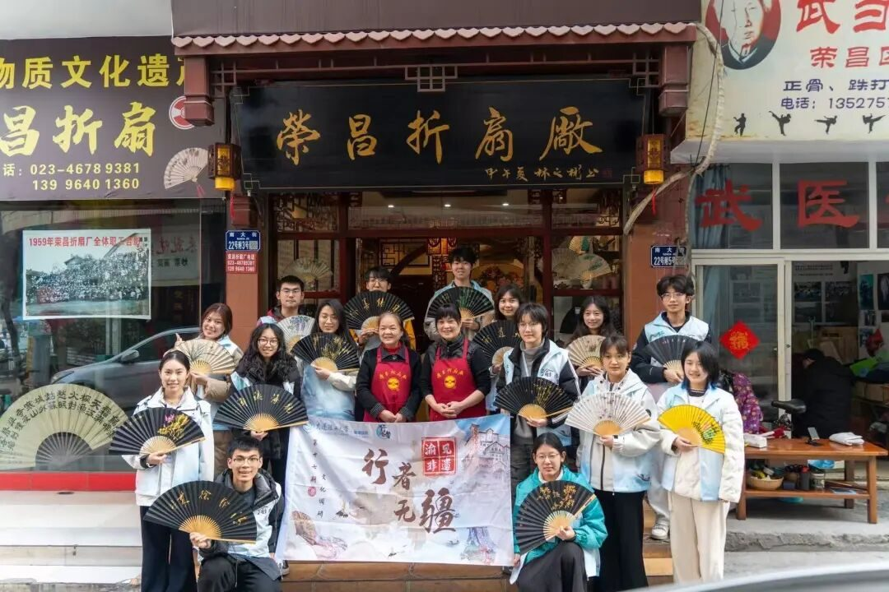
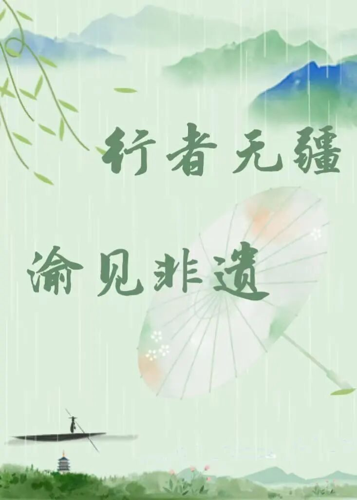
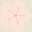
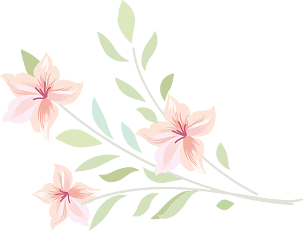
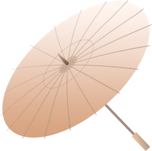
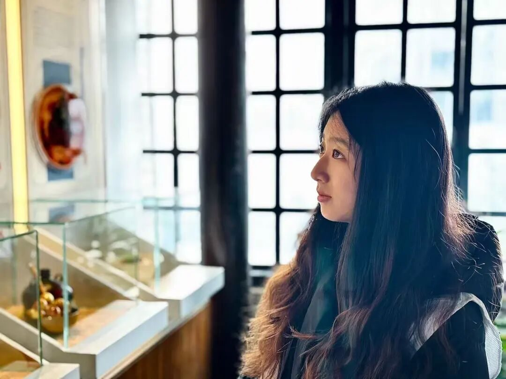
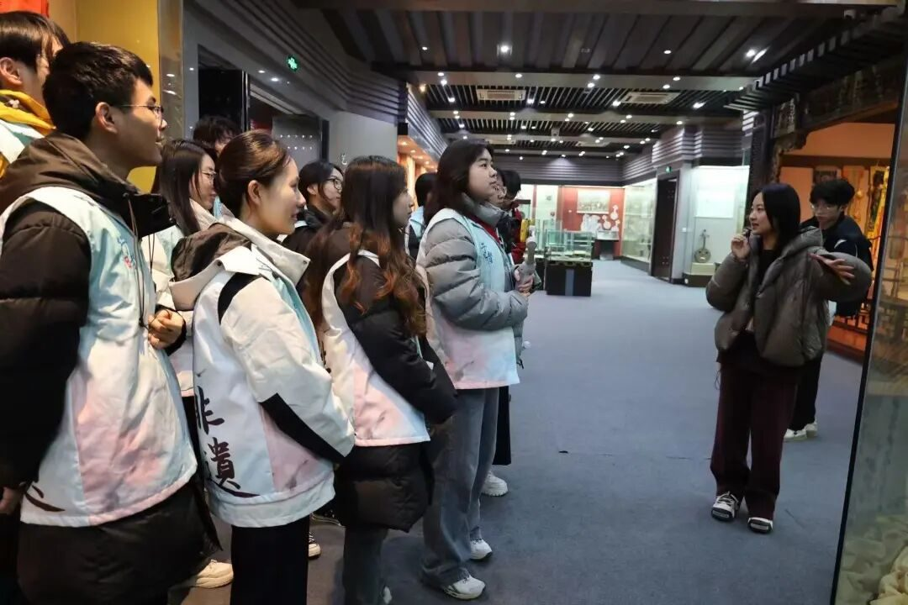
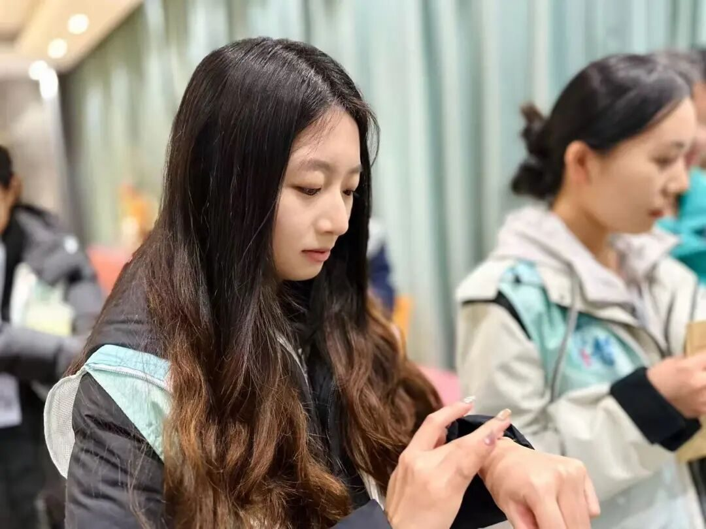
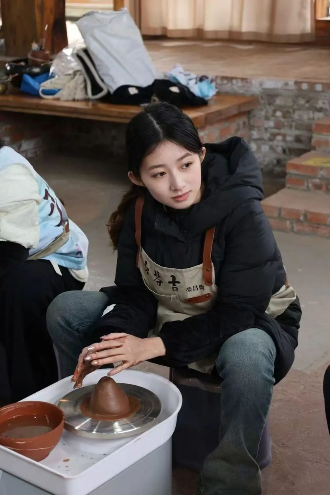
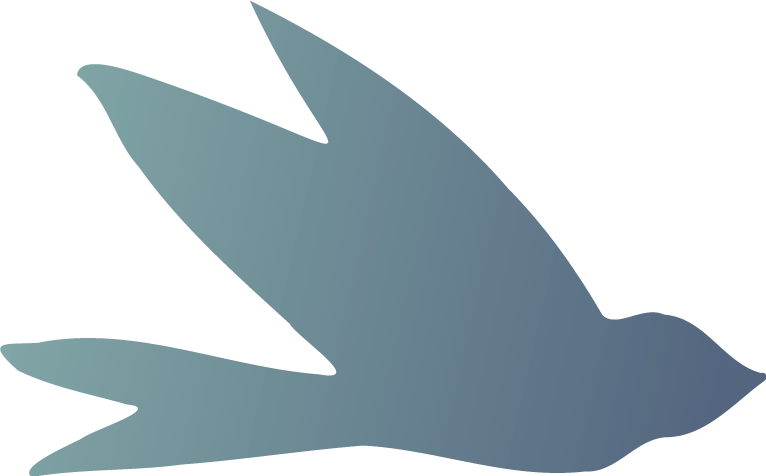

【行者无疆·渝见非遗】个人实践感悟——尹竞翎



指尖离开陶轮的那一瞬，我突然理解了“传承”的重量。
那团湿润的陶泥在掌中呈现的形状或许稚拙，
但那份通过双手与千年对话的震颤却无比真实。
重庆的非遗之旅，与其说是一场文化考察，
不如说是一次关于时间、技艺与当代人精神处境的深刻叩问。


我曾在博物馆的玻璃展柜前驻足，那些精美的器物静默如谜。然而更触动我的，是古老织机上“一日八寸”的刻度——那不是效率的标尺，而是一种与天地节奏同频的生命韵律。在这个追求倍速的时代，夏布织机缓慢的“哐当”声，川剧演员经年累月练就的刹那变脸，荣昌陶匠对一道釉色数十年的斟酌，都在向我们提示另一种时间哲学：有些珍贵之物，只能沉淀于时光的深处，无法被加速。

传承的本质，或许不在于复刻过去的形制，而在于承接那种专注、虔敬的“匠心状态”。当我在非遗体验中心看到年轻人用数字技术再现皮影戏时，当听说刘吉芬老师的女儿用新思维修缮老博物馆时，我看到了“活态传承”最动人的模样——它既是血脉相续的守望，更是让传统基因在新时代语境中重新表达的生命力。真正的守护，不是将非遗制成标本供奉，而是找到它在我们当下生活中的呼吸方式。


最深刻的领悟来自那些“慢”的体验。揉捏陶土时，必须顺应材料的性情；观摩夏布制作时，方能体会“经纬”的哲学——人生许多事亦如此，需要找到恰当的纵横，织就既有韧性又有透气性的生命之布。非遗技艺之所以珍贵，不仅在于其美学价值，更在于它们承载了一种圆满、自足的心性修炼。在效率至上的现代生活中，这份“慢工出细活”的心境本身，已成为一剂珍贵的精神解药。


行者无疆
来源 | 行者无疆实践团
文字 | 行者无疆实践团
图片 | 行者无疆实践团
编辑 | 尹竞翎
审核 | 刘辰锡
责编 | 邹靓靓 周 亮